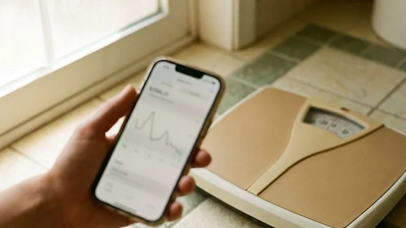

GLP-1 medications work while you take them. Once the medication leaves your system, hunger and food noise tend to come back within weeks. That is not a personal failure. Like blood pressure medicine, a GLP-1 manages a long-term condition instead of fixing it for good.
Many patients ask about stopping before they even start. It is a fair question, and the answer shapes how a provider sets expectations from the first visit. Some people plan to stay on a medication for years, the way they would with a blood pressure pill, and adjust the dose as needed. Others want a defined course and a taper. Both are reasonable plans.
What the studies show about stopping
In the STEP 1 extension, people who stopped semaglutide regained about two thirds of the weight they had lost within a year. In STEP 4, patients switched to placebo after 20 weeks regained roughly 7 percent of body weight, while those who stayed on kept losing. SURMOUNT-4 found a similar pattern with tirzepatide. Blood pressure and blood sugar improvements also faded.
The SURMOUNT-4 numbers are worth spelling out. After 36 weeks on tirzepatide, people switched to placebo regained about 14 percent of their body weight over the next year, while those who continued lost about 5 percent more. The gap is wide. The steepest part of the regain came early on.
Regain is not universal. A minority held onto most of their loss, and they tended to be people with steady routines around food and exercise. The trials cannot tell you which group you will be in.
Why weight comes back
Losing weight lowers the calories your body burns each day and raises hunger hormones such as ghrelin, so the same meal feels less satisfying than it used to. That push back toward the old weight is often called metabolic adaptation. The GLP-1 was holding those signals down. Without it, the signals come back, and they often come back loud. Muscle lost during treatment makes it worse.
Habits built during treatment carry more weight after it. People who used the medication months to learn smaller portions and regular strength training have more to fall back on when appetite returns. Food noise often returns first. Noticing it early, and telling your provider, gives you time to adjust the plan before the scale moves much.
Maintenance plans that help
Stopping cold is not the only choice. Many providers taper slowly, stepping down one dose level every four weeks or so while watching your weight and hunger closely. Some patients stay on a lower maintenance dose long term. Others stretch the interval between doses, which is an off-label approach your provider would need to supervise.
- Keep protein near your target, about 1.2 grams per kilogram or more.
- Strength train at least twice a week to hold onto muscle.
- Weigh in weekly and agree on a regain threshold, such as 5 pounds, that triggers a check-in.
- Keep fiber high and limit liquid calories.
- Plan for sleep and stress, since both drive hunger.
Planning the stop matters as much as the plan for starting. A good taper begins when your weight has been stable for at least three months, not in the middle of active loss. Life events count. Avoid stopping right before the holidays or a stressful stretch at work. Your provider will also want a recent weight and, for patients with diabetes, an A1c before stepping down.
Insurance changes can force a stop. Losing coverage is a common reason people stop suddenly, so raise it with your provider as soon as you know. Running out abruptly is the worst version. Plan a few weeks ahead, because prior authorizations and pharmacy transfers rarely happen in a day.
Restarting is an option if weight returns. Patients who restart usually need to titrate up again from a low dose, because jumping straight back to a full dose often brings the nausea back with it. Your provider decides the restart dose.
Talk to a provider
At Salt Lake City Weight Loss, maintenance is part of the plan from the first visit. After a licensed provider reviews your intake, any prescription comes with check-ins that cover tapering and long-term dosing. Medication ships from a licensed US pharmacy if prescribed. Get started online.
Medical disclaimer: This article is for general education and is not medical advice, so talk with a licensed provider before stopping or changing any medication.
Thinking about treatment in Salt Lake City, UT?
Salt Lake City Weight Loss providers review every case online and ship medication across the Salt Lake City area when it is appropriate.